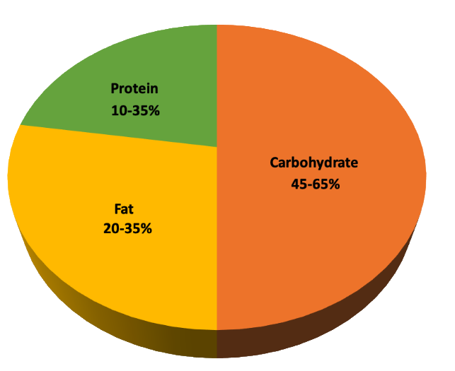

Nutrition plays a vital role in overall health and human development. Proper nutrition is associated with improved health outcomes for infants, children, and adults, stronger immune systems, safer pregnancies and childbirth, and a reduced risk of non-communicable diseases such as diabetes, obesity, depression, cancer, and cardiovascular disease. Adequate nutrition also supports longevity, enhances productivity, and improves learning outcomes.

Fewer than one in ten children and adults consume the recommended daily intake of vegetables. Additionally, only 25% of adults and 16% of adolescents meet U.S. physical activity guidelines.